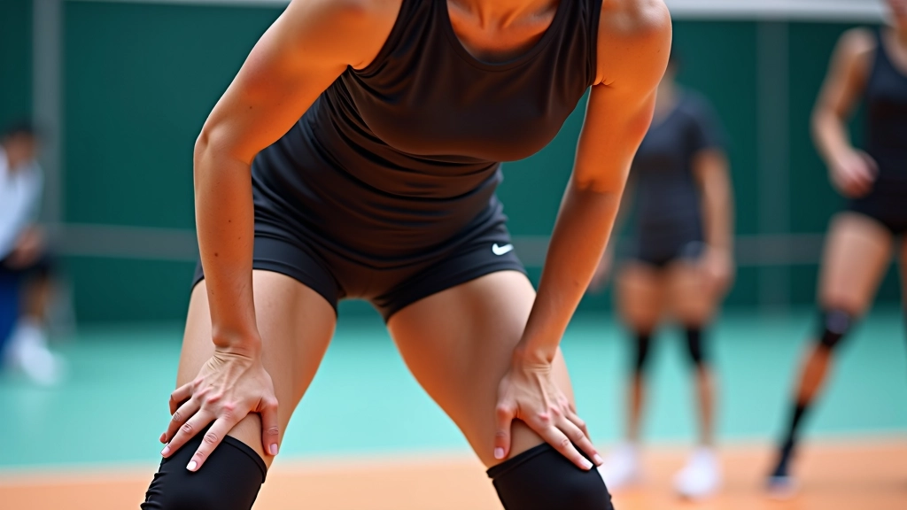
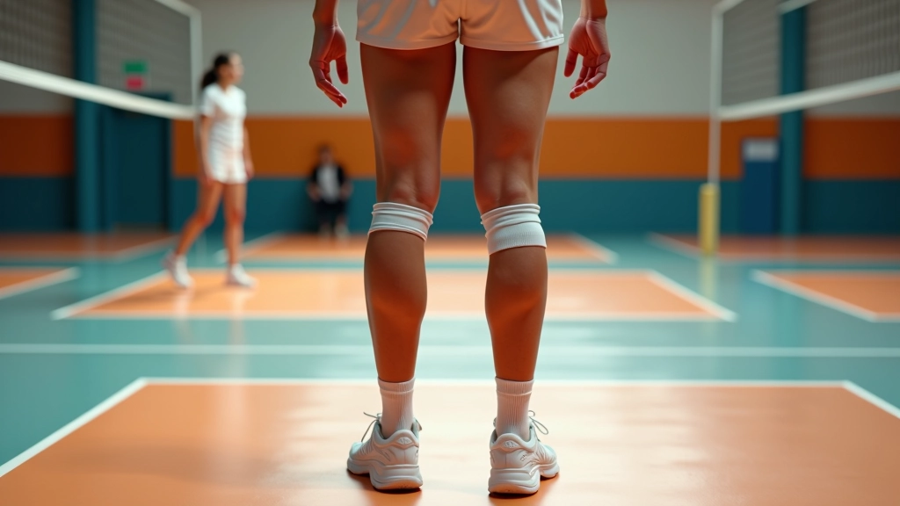
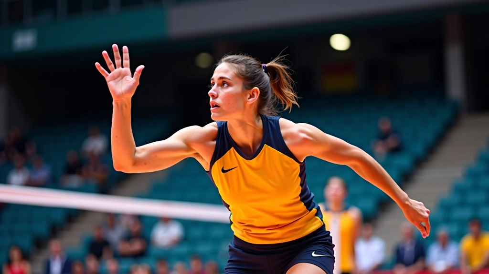
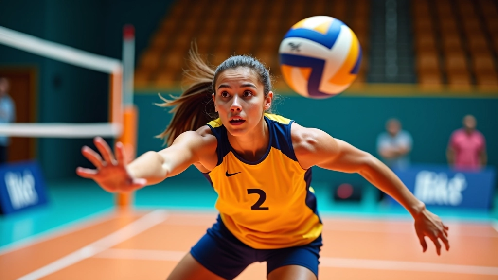

أساسيات الاستقبال السفلي الصحيح
تعلم المواضع الأساسية والحركات التي تشكل أساس كل استقبال فعال. نغطي وضع القدمين والذراعين والتوقيت الصحيح.


فريق الأهلي فولي التحريري
فريق تحريري متخصص
من إعداد فريق الأهلي فولي التحريري، المتخصص في شرح تقنيات الكرة الطائرة بطريقة واضحة وعملية.
ما هو الاستقبال السفلي؟
الاستقبال السفلي — يُعرف أيضاً بـ "الدفاع الأمامي" — هو أساس كل دفاع قوي في الكرة الطائرة. إنها الحركة التي تبدأ بها معظم الهجمات الناجحة. بدون استقبال جيد، لن تتمكن من بناء لعبة هجومية فعالة.
الشيء المهم هنا أن الاستقبال السفلي ليس مجرد حركة عشوائية. هناك تقنية محددة، وضعية صحيحة، وتوقيت دقيق. نحن سنشرح كل جزء من هذه الأجزاء بالتفصيل.
النقطة الأساسية: الاستقبال الجيد يبدأ من القدمين وينتهي بالذراعين. إذا أخطأت في الأساس، سيكون من الصعب جداً إصلاح الحركة لاحقاً.

وضع القدمين والموقف الأساسي
كل شيء يبدأ من الأرض. قدماك هما أساس توازنك وقدرتك على الحركة السريعة. الموقف الصحيح يعني أنك مستعد لأي كرة تأتي إليك.
ضع قدميك بعرض الكتفين تقريباً. الأصابع تشير للأمام، والركبتان منحنيتان قليلاً — ليس الكثير، فقط انحناء طبيعي. وزنك على كرات القدم، وليس على الكعب. هذا يعطيك القدرة على الحركة الفورية في أي اتجاه.
المسافة: قدماك بعرض الكتفين تماماً
الركبتان: منحنيتان قليلاً، جاهزة للحركة
الوزن: على كرات القدم، ليس الكعب

موضع الذراعين والمنصة
موضع الذراعين هو الجزء الذي يصنع الفرق بين استقبال جيد وسيء. يديك تشكلان "منصة" توجه الكرة إلى حيث تريدها أن تذهب.
ابدأ بذراعيك معاً أمامك، ممدودتان للأسفل قليلاً. كوعاك بجانبك، وليس للخارج. يداك ملتصقتان معاً — إما أن تضع يداً فوق الأخرى، أو تشبك أصابعك. الشيء المهم أن تكون منصة مسطحة وقوية.
تذكر: الذراعان تعملان معاً دائماً. لا تحاول استقبال الكرة بذراع واحدة فقط — هذا يؤدي إلى أخطاء كثيرة.
عندما تأتي الكرة، لا تحاول "ضربها" بقوة. بدلاً من ذلك، دع الكرة تأتي إليك وارفع ذراعيك قليلاً لتوجيهها. هذا يسمى "الامتصاص" — أنت تمتص قوة الكرة بدلاً من أن ترفعها بقوة.
مقالات ذات صلة
تابع تعلمك مع هذه الأدلة الأخرى في مجال تقنيات الدفاع

إتقان حركة الإنقاذ البنكيكي
الإنقاذ البنكيكي من أصعب التقنيات لكنه يمكن أن ينقذ اللعبة. نشرح كيفية ممارستها وأفضل الأوقات لاستخدامها.
اقرأ المقالتمارين متقدمة لتحسين الاستقبال
سلسلة من التمارين التي تحاكي ظروف المباراة الحقيقية. تركز على السرعة والدقة والثبات تحت الضغط.
اقرأ المقال
قراءة اللعبة والاستجابة السريعة
الدفاع الجيد يبدأ قبل أن تُرمى الكرة. تعلم كيفية قراءة الهجوم والتنبؤ بحركات الخصم.
اقرأ المقالالتوقيت والحركة
التوقيت هو كل شيء في الاستقبال. يمكنك أن يكون لديك الموقف الصحيح والذراعان في المكان الصحيح، لكن إذا لم تتحرك في الوقت المناسب، ستفقد الكرة.
عندما تتابع الكرة بعينيك، ابدأ في التحرك نحوها. لا تنتظر حتى تقترب منك جداً. اتخذ خطوة أو خطوتين صغيرتين باتجاهها. هذا يعني أنك ستقابل الكرة بدلاً من أن تنتظرها.
عندما تصل الكرة إليك، يجب أن تكون ركبتاك منحنيتان أكثر قليلاً. ثم ترفع ذراعيك للأعلى قليلاً لتوجيه الكرة. لا ترفعها بسرعة — ارفعها بسلاسة وثبات.
متابعة العين: راقب الكرة من لحظة مغادرتها يد الخصم
الحركة المبكرة: تحرك نحو الكرة قبل أن تقترب كثيراً
الرفع السلس: ارفع ذراعيك بسلاسة وتحكم، لا تسحق الكرة

البدء بالممارسة
الآن تعرف الأساسيات. الخطوة التالية هي الممارسة. هذا ليس شيئاً تتعلمه في جلسة واحدة — يستغرق الوقت لتطوير العضلات والذاكرة اللازمة.
الأسبوع الأول: تعلم الموقف
ركز على الموقف الصحيح والموضع الأساسي. قف أمام المرآة وتأكد من أن قدميك بعرض الكتفين وركبتاك منحنيتان قليلاً. لا تقلق بشأن الكرات حتى الآن.
الأسبوع الثاني: إضافة الذراعين
الآن أضف حركة الذراعين. اطلب من صديق أن يرمي لك الكرات ببطء. تركز على تشكيل المنصة الصحيحة بذراعيك. قد لا تكون مثالية، وهذا حسن.
الأسبوع الثالث: التوقيت والحركة
الآن أضف الحركة. حاول الاقتراب من الكرات قبل أن تصل إليك. ركز على التوقيت والحركة معاً. قد تفقد بعض الكرات — هذا طبيعي جداً.
نصائح عملية:
- ابدأ بكرات بطيئة وسهلة. هذا يعطيك الثقة.
- لا تحاول فعل كل شيء مرة واحدة. ركز على جزء واحد في كل جلسة تدريب.
- مارس الحركة 50-100 مرة في اليوم. الممارسة المنتظمة أهم من الممارسة الطويلة.
- اطلب من مدرب أن يراقبك. غالباً ما تفعل أشياء بدون أن تدرك.
الخطوة التالية
أساسيات الاستقبال السفلي ليست معقدة — الموقف، الذراعان، التوقيت. لكنها تحتاج إلى ممارسة منتظمة. لا تتوقع أن تصبح خبيراً في أسبوع واحد. العظماء يستغرقون وقتاً.
ابدأ اليوم بالموقف الصحيح. غداً أضف الذراعين. الأسبوع القادم ركز على التوقيت. قبل أن تعرف، ستصبح استقبالاتك أفضل بكثير.
هل تريد معرفة المزيد عن التقنيات المتقدمة؟
اكتشف التمارين المتقدمةملاحظة مهمة
هذا الدليل مخصص للأغراض التعليمية والمعلوماتية. إنه يشرح التقنيات الأساسية للاستقبال السفلي في الكرة الطائرة. تذكر أن الممارسة تحت إشراف مدرب مؤهل هي الطريقة الأفضل لتعلم هذه المهارات بشكل صحيح وآمن. كل لاعب مختلف، وقد تحتاج بعض التقنيات إلى تعديلات بناءً على احتياجاتك الشخصية وقدراتك.